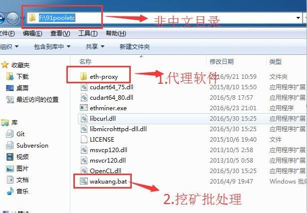
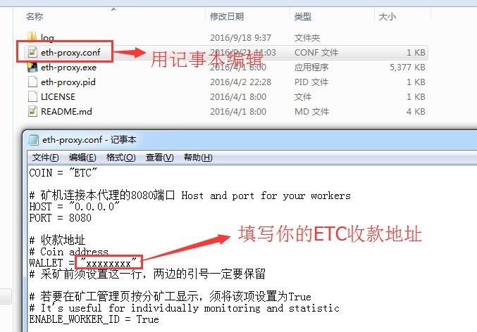
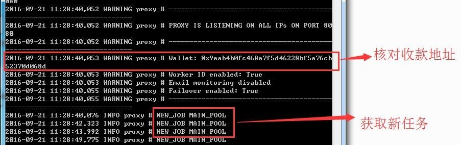
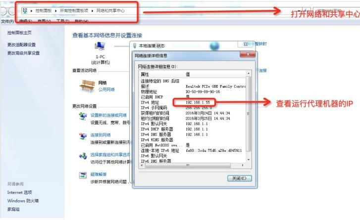
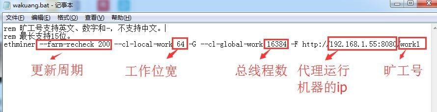
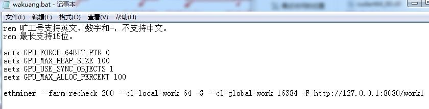
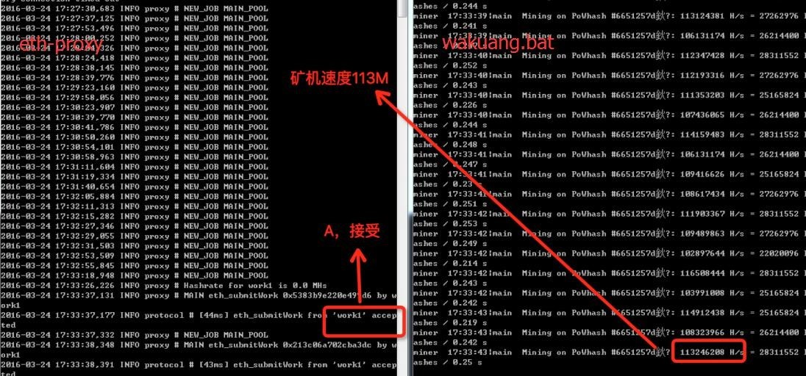

1、 系统及驱动
系统以 win7 64 位最佳， 建设使用官方原版系统。
cn_windows_7_ultimate_with_sp1_x64_dvd_u_677408.iso
SHA1 2CE0B2DB34D76ED3F697CE148CB7594432405E23
下载地址：
ed2k://|file|cn_windows_7_ultimate_with_sp1_x64_dvd_u_677408.iso|3420
557312|B58548681854236C 7939003B583A8078|/
最新版本的驱动由于挖矿软件尚未优化， 速度较差。
AMD R9 3**系列建议 15.12
版本驱动， 旧卡尤其是 2G 显存使用 14.X 版本驱动， 确保识别所有显卡。
2、 挖矿软件
挖矿软件包含 ethminer 和 Stratum Proxy。 Ethminer 以 getwork 方式获取任
务， 并进行挖矿。 Stratum Proxy 将 getwork 协议转化为 Stratum 协议， 连接 矿
池， 为局域网矿机提供稳定快速的 getwork 连接。
局域网中仅需运行一个Stratum Proxy。 使用 Stratum Proxy 会减少丢包和延时， 并提供矿池备份设
置， 提升收益 10-20%。 由于 ETC 每 15 秒一个区块， 挖矿软件也不完善， 目前通
过 Stratum Proxy 的拒绝率在 2-4%， getwork 协议在 10%以上。
安装好系统和显卡驱动， 确保识别所有显卡后， 将附件的软件下载解压，
放在非
中文目录里

打开 eth-proxy文件夹，以记事本打开eth-proxy.conf，填写您的ETC收款地址，其他不用设置，保存。

双击运行 eth-proxy.exe,部分系统需要右键以管理员身份运行。核对钱包地址是否正确，观察能否连接到矿池获取任务。

打开网络和共享中心，查看运行代理机器的 IP 地址，图中为 192.168.1.55。建议设置成固定 IP。

用记事本打开 wakuang.bat，编辑 IP 地址、调整其他参数：

--farm-recheck：软件强制更新任务周期，100-600 单位是 MS；机器少，单台算力 100M 以上的话 可以设置为 100；一般机器建议设置为
200；数值越小拒绝率越低，但是过小会导致机器算力下降；
--cl-local-work ：运算位宽，可以是 64，128，256；
--cl-global-work：显卡运算线程数；
矿工号：仅支持小些字母和数字，不能包含”.”，矿池自动添加矿工不需要在矿池新建
2G 显存卡不能挖矿的，在 wankuang.bat 中添加以下命令,：
setx GPU_FORCE_64BIT_PTR 0
setx GPU_MAX_HEAP_SIZE 100
setx GPU_USE_SYNC_OBJECTS 1
setx GPU_MAX_ALLOC_PERCENT 100

双击wakuang.bat，等待更新 DAG 文件（约15s）。开始挖矿后观察挖矿和代理，是否有下图内容产生。

在有上图内容产生后，打开
http://www.91pool.com/currency.html?coin=etc&i=0,输入你的钱包查看矿机状态和收益。